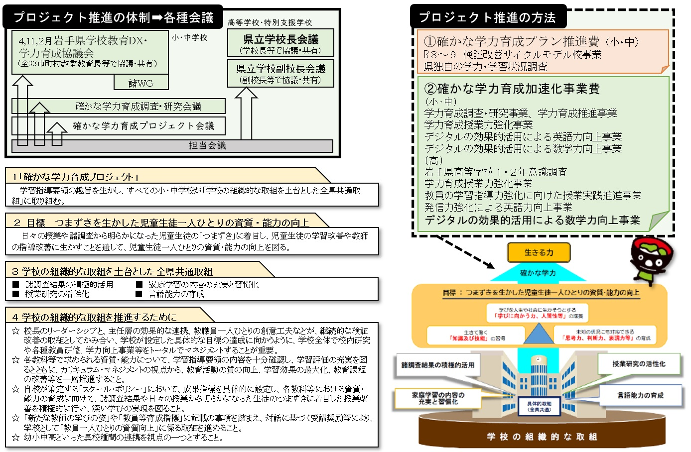
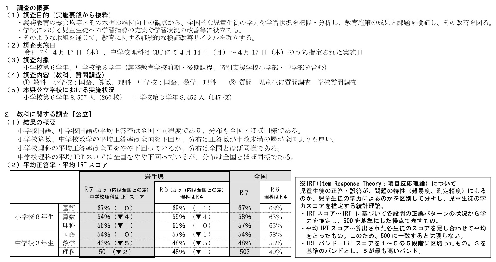

「確かな学力育成プロジェクト」
令和8年度学校教育指導指針より

画像を読み込めませんでした
images/02_pic001.jpg を配置してください。
Action
県の学力向上施策を確認してみましょう。
R7 全国学力・学習状況調査結果について

画像を読み込めませんでした
images/02_pic002.jpg を配置してください。
Action
全国学調の結果に対する県の分析やメッセージを確認してみましょう。
ANALYSIS DIRECTION
各種調査をつなぎ、変容・課題・成果を捉える
単年度・単一調査の結果だけでなく、小学校から中学校までの傾向を連続的に捉えます。
小5県学調岩手県学習定着度状況調査
→
小6全国学調全国学力・学習状況調査
→
中1新入生学調岩手県新入生学習状況調査
→
中2県学調岩手県学習定着度状況調査
→
中3全国学調全国学力・学習状況調査
各学年間の傾向を連続的に把握し、課題のある小問を経年でモニタリング課題の推移や教育成果を捉え、次の分析・改善につなげる
教育行政の実務知 × 大学の専門知
岩手県教育委員会
＋
東京学芸大学・岩手大学
→
令和8年度から、分析の高度化に着手
各種調査を多角的に分析し、より的確な課題把握と施策の焦点化に向けた取組を開始
課題を明確にする→対策を焦点化する→学校・施策の改善へ
※同一児童生徒を追跡する縦断分析ではありません。各調査の対象・内容・尺度の違いに留意して分析します。